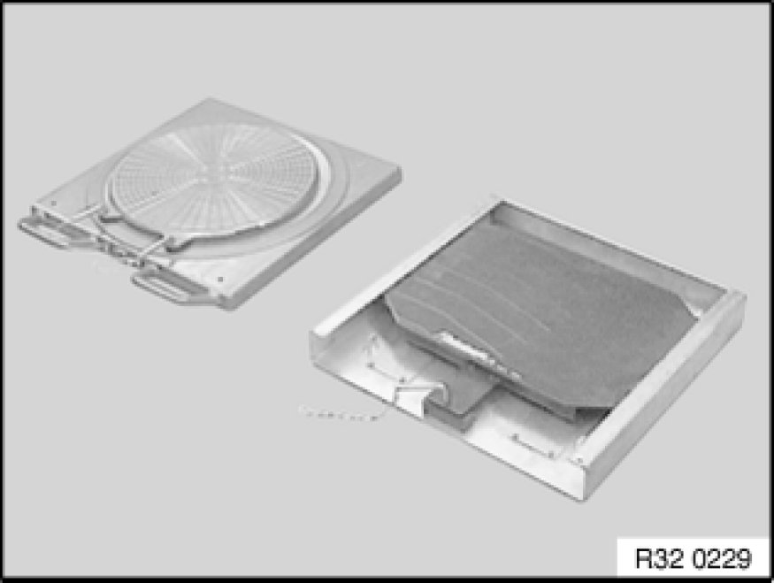
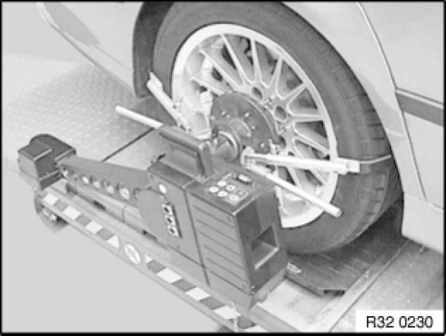
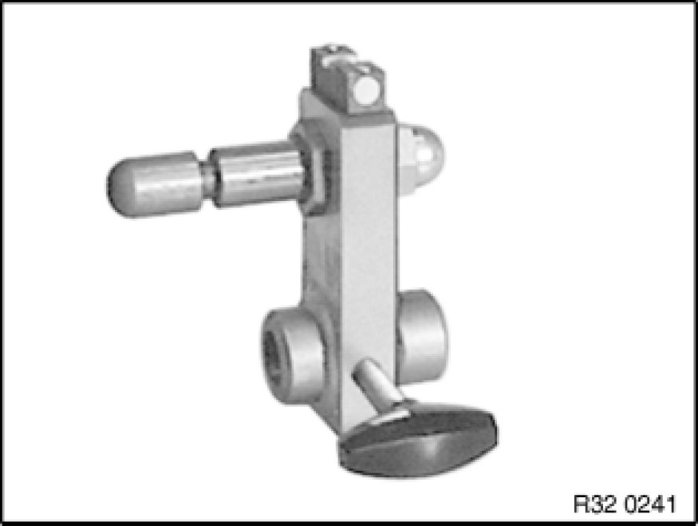

KDS Chassis / Wheel Alignment Check with Ride-Height Measurement without Load
32 00 155 - KDS chassis/wheel alignment check with ride-height measurement without load

Note:
- Read and comply with General information and definitions General Information and Definitions.
- Read and comply with General chassis definition General Chassis and Suspension Definitions.

- Check compliance with test conditions Test Conditions for Chassis/Wheel Alignment Check, bring vehicle to a stop if necessary.

- If necessary, prepare lifting platform.
- Drive vehicle onto lifting platform.
Note: The front and rear wheels must be positioned centrally on the rotary and sliding plates.
- Remove locking pins from both rotary and sliding plates, align pickup using bubble level and activate

- Attach quick-clamping holder/quick-clamping unit to vehicle and remove clamping levers in area of front wheels
- Attach pickup to quick-clamping holder/quick-clamping unit, align using bubble level and connect to rotary plates
Note: When using quick-clamping units, perform rim runout compensation Performing Rim Runout Compensation after installing the pickups.

- If necessary, attach spoiler adapter.
- If necessary, switch on chassis alignment system
- Enter customer and vehicle data
- Identify chassis version Application and ID and select vehicle
- Enter tire pressure and tread depth
- Measure and enter vehicle ride height

- Install brake tensioner.

E81, E82, E87, E88, E90, E91, E92, E93:
Important!
Risk of damage!
In order to avoid damaging the front side panel during the "Max. steering lock" drive-in routine, make sure the pickups are removed from the quick-clamping holders/quick-clamping units during output and input alignment. In the process do not detach the connecting cable from the pickups or the rotary plates.
Note:
After the drive-in routine, reconnect the pickups to the quick-clamping holders/quick-clamping units, align using the bubble levels and secure in place.
- Perform input measurement in accordance with equipment manufacturer's instructions.
- Compare specified values Wheel Alignment with actual values
Only in event of customer complaint (e.g. poor driving performance):
Important!
Do not remove screws/bolts (front axle carrier to engine carrier / body).
Slacken all screws/bolts (front axle carrier to engine carrier / body) and then retighten to specified torque.
Refer to Lowering front axle carrier Lowering/Raising Front Axle Carrier.
If necessary, adjust front axle and rear axle
Important!
Only on cars with Active Cruise Control:
Because the axis of motion is the reference for ACC adjustment, it is necessary after an adjustment of the rear axle which alters the axis of motion also to check the adjustment of the ACC sensor!
It is not necessary to check the ACC sensor after only one adjustment of the front axle!
- Perform output measurement in accordance with equipment manufacturer's instructions.
- Save and print out test record.
- Carry out steering angle sensor adjustment/adjustment for active front steering Adjustments
- Insert locking pins into both rotary and sliding plates
- Remove chassis/wheel alignment system
- Drive vehicle off lifting platform
- If necessary, carry out adjustment of ACC sensor